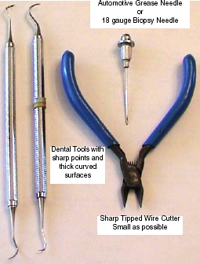

| NOTE: | Do not break a pin off a good interposer so it will fit. Microphonics noise and/or image artifacts will result. |
There is no specific procedure for this action. These are suggestions that may save you significant time and expense.
You will need a magnifying glass, ESD protection, Nitrile gloves and very sharp strong pointed tools.
Use ESD wrist strap and Nitrile gloves to prevent further damage to detector FETs or DAS electronics.
Move the table to its lowest position. Place the DAS near 6 O’clock and lock it in place. This will allow you to sit comfortably and use your knees as a resting place to keep your hands steady.
Use the magnifying glass to closely inspect the broken male pin. A small section should be visible since the female socket is cone shaped. Male pins generally break off at the base.
Use a biopsy needle, 18 gauge or larger, or a dental pick with a thick working surface. See Illustration 2.
Biopsy needles can be found in most medical facilities.
Dental tools can be obtained from most Dentist offices. They regularly discard older utensils.
A grease needle can be purchased at an automotive parts store.
Objective:
Use the sharp pointed tool to raise the broken pin out of the female socket. Raise it enough so that a fine tipped wire cutter can extract the pin fully.
Warnings:
Be very careful not to damage the female connector. Deep scratches or gouges are bad and the component would need to be replaced.
Do not "Dig" the pin out. This will damage the female socket or connector.
Do not put anything in the female socket such as a needle.
Be careful of metal shavings. They can cause problems elsewhere.
Do not attempt to drill out a broken pin.
Testing:
Assemble gantry and restore power.
It takes 2 minutes of warm-up time for every minute the DAS was turned off, up to 1 hour.
Perform Image Quality testing.
Illustration 2: Emergency Interposer Pin removal tools
